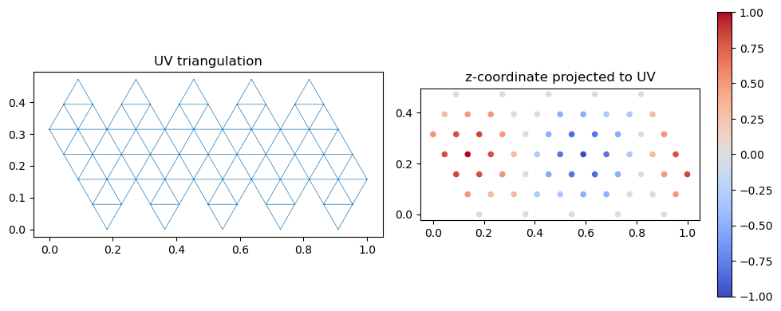
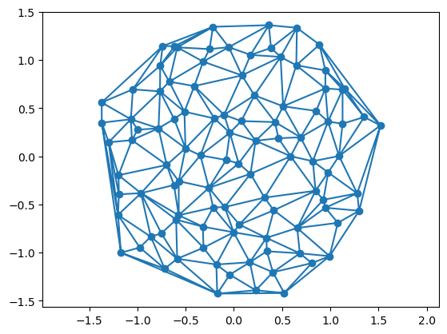

# test reading a mesh
mesh = TriMesh.read_obj("../test_meshes/disk.obj")Warning: readOBJ() ignored non-comment line 3:
o flat_tri_ecmctriangulax is a library for working with triangular meshes using JAX. This notebook defines tools for loading, processing, and saving triangular meshes outside of JAX. The dataclass TriMesh keeps the different pieces of a triangulation in one place. This module allows interfacing with JAX-external code, like the excellent igl geometry processing library, prepare initial conditions for simulations, etc. The data structure for the JAX-based code is defined in the mesh module, notebook 02.
One use case of triangulax is simulations of 2D cell tesselations. A convenient way to represent a cell tiling is by its dual triangular mesh. Each cell becomes a triangulation vertex, and corners of the cell polygons become triangulation faces. This represents the connectivity of the cell tesselations by a 2D triangulation. For example, Voronoi tesselations can also be represented by their dual Delaunay triangulation.
TriMesh classA TriMesh triangulation is a list of vertices and faces (triangles):
float, where \(d\) is 2 or 3.int. Each row is an ordered triple of vertex indices that form a face.float. An entry is the position of the dual vertex of the triangulation face (think circumcenter).To read and write, we use the .obj-file format. We use the igl geometry processing library. The TriMesh class is a “holder” for loading, saving, and visualizing meshes, and not to be used for numerical computation.
To map 3D meshes into a 2D plane for visualization, one can use UV maps (the triangular-mesh-equivalent of a coordinate parametrization for a 2D surface). UV maps can be read in from .obj files and are stored in the TriMesh object.
A UV map consists of:
texture_vertices): a \((N_{TV}, 2)\) array of 2D coordinates. The number of texture vertices can differ from the number of mesh vertices (e.g. at seams, one mesh vertex maps to multiple UV positions).texture_faces): a \((N_F, 3)\) array of texture vertex indices. texture_faces[i] corresponds to faces[i].The mapping between mesh vertices and texture vertices is provided by the texture_vertex_to_vertex_map and vertex_to_texture_vertex_map properties. These enable projecting per-vertex data (e.g. scalar fields, Laplacian eigenvectors) to the UV domain for 2D visualization.
Simple class for reading, holding, transforming, and saving triangular meshes.
A TriMesh comprises vertices and faces, describing a surface in 2d or 3d. In addition, there can be a 2d/3d position for every face (think Voronoi dual of the triangulation). Optionally, a UV map (texture vertices and texture faces) can be stored for 3D-to-2D projection.
Vertices and faces are jnp.arrays. Each face is a triple of vertex indices. Vertices and faces are ordered - this is essential so that we know which attribute vector entry goes to which vector/edge/face. Faces in a face are assumed to be in counter-clockwise order.
Meshes are read and written in the .obj format (https://en.wikipedia.org/wiki/Wavefront_.obj_file). To store face_positions, we abuse the vn (vertex normal) entry of an .obj file. Face positions will be written in order corresponding to faces. When reading from an .obj file, edges are recomputed from faces and initialized in alpha-numerical ordering. An .obj file expects 3d positions; the z-position is ignored when reading and set to 0 when writing for 2d meshes.
If the mesh has infinity vertices, a # triangulax: has_inf_vertex comment is written; on read, sentinel values are converted back to inf. Vertices at “infinity” are used to implicitly represent mesh boundaries for numerical reasons.
Attributes
vertices : Float[jax.Array, “n_vertices dim”]
faces : Int[jax.Array, “n_faces 3”]
face_positions : Float[jax.Array, “n_faces dim”] | None
texture_vertices : Float[jax.Array, “n_texture_vertices 2”] | None UV coordinates. Number of texture vertices can differ from number of mesh vertices.
texture_faces : Int[jax.Array, “n_faces 3”] | None Texture vertex indices per face. texture_faces[i] corresponds to faces[i].
Property methods (use like attributes)
dim : int
n_vertices : int
has_inf_vertex : bool
has_texture : bool
texture_vertex_to_vertex_map : Int[jax.Array, “n_texture_vertices”] Entry i is the mesh vertex index corresponding to texture vertex i.
vertex_to_texture_vertex_map : Int[jax.Array, “n_vertices”] Entry i is a texture vertex index corresponding to mesh vertex i.
Static methods
read_obj : str -> TriMesh
Methods
write_obj : str -> None
Warning: readOBJ() ignored non-comment line 3:
o flat_tri_ecmcArray(True, dtype=bool)Warning: readOBJ() ignored non-comment line 3:
o flat_tri_ecmc# test reading a 3D mesh with UV map (sphere.obj has texture data from Blender)
mesh3d = TriMesh.read_obj("../test_meshes/sphere.obj", dim=3)
assert mesh3d.has_texture, "sphere.obj should have UV data"
assert mesh3d.texture_vertices.shape[1] == 2, "texture_vertices should be 2D"
assert mesh3d.texture_faces.shape[0] == mesh3d.faces.shape[0], "texture_faces and faces must have same length"
print(f"Sphere: {mesh3d.n_vertices} vertices, {mesh3d.faces.shape[0]} faces, "
f"{mesh3d.texture_vertices.shape[0]} texture vertices")Sphere: 42 vertices, 80 faces, 63 texture verticesWarning: readOBJ() ignored non-comment line 3:
o Icosphere# test projecting vertex positions to UV space and plotting the UV map
positions_in_uv = mesh3d.vertices[mesh3d.texture_vertex_to_vertex_map]
assert positions_in_uv.shape == (mesh3d.texture_vertices.shape[0], 3)
fig, (ax1, ax2) = plt.subplots(1, 2, figsize=(10, 4))
ax1.triplot(*mesh3d.texture_vertices.T, mesh3d.texture_faces, lw=0.5)
ax1.set_title("UV triangulation")
ax1.set_aspect("equal")
sc = ax2.scatter(*mesh3d.texture_vertices.T,
c=positions_in_uv[:, 2], cmap="coolwarm", s=20)
ax2.set_title("z-coordinate projected to UV")
ax2.set_aspect("equal")
plt.colorbar(sc, ax=ax2)
plt.tight_layout()
# test write/read roundtrip with UV data
mesh3d.write_obj("../test_meshes/sphere_write_test.obj")
mesh3d_reloaded = TriMesh.read_obj("../test_meshes/sphere_write_test.obj", dim=3)
assert mesh3d_reloaded.has_texture
assert jnp.allclose(mesh3d.texture_vertices, mesh3d_reloaded.texture_vertices, atol=1e-5)
assert jnp.array_equal(mesh3d.faces, mesh3d_reloaded.faces)
print("UV write/read roundtrip: OK")UV write/read roundtrip: OK2D mesh (no UV) backward compatibility: OKWarning: readOBJ() ignored non-comment line 3:
o flat_tri_ecmc
def compute_per_face_jacobian(
source_vertices:Float[Array, 'n_source_vertices d_source'], # Source mesh vertices.
source_faces:Int[Array, 'n_faces 3'], # Source mesh faces (triangular).
target_vertices:Float[Array, 'n_target_vertices d_target'], # Target mesh vertices.
target_faces:Int[Array, 'n_faces 3'], # Target mesh faces (triangular).
)->Float[Array, 'n_faces d_target d_source']: # Per-face Jacobian matrices.
Compute per-face Jacobian matrix for a map between meshes.
source_faces[i] is mapped to target_faces[i]. The Jacobian maps tangent vectors of the source mesh to tangent vectors of the target mesh, evaluated per face via least-squares.
Typical use: map gradients from a 3D mesh to its 2D UV parametrization::
jac = compute_per_face_jacobian(mesh.vertices, mesh.faces,
mesh.texture_vertices, mesh.texture_faces)
gradient_2d = jnp.einsum('fij,fj->fi', jac, gradient_3d)Some functions to create meshes based on the Delaunay triangulation of a point set.
Some functions for plotting meshes:
Get points for rectangular patch of triangular lattice with nx, ny points.
Sample n_vertices points from the Poisson ensemble in rectangle [-limit_x/2, limit_x/2] * [-limit_y/2, limit_y/2].
Sample n_vertices points from the Ginibre ensemble. Points are scaled to unit disk.
(np.float64(-1.5158254775951099),
np.float64(1.6648836832643656),
np.float64(-1.5647768086089484),
np.float64(1.5000093386295263))
For each vertex, get the indices of the adjacent vertices in correct order. For boundary vertices, this list contains the vertex itself.